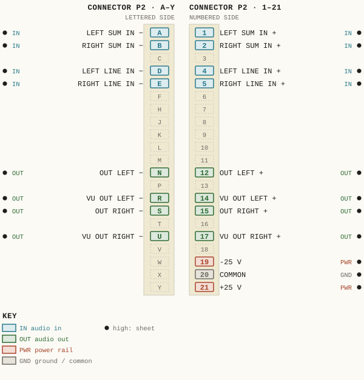
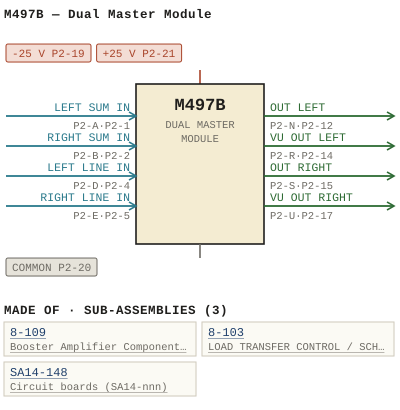

M497B — Dual Master Module
| Type | module |
| Category | SUMMING |
| Try it | simulator & front panel · download package (zip) |
| Earliest dated evidence | 1983|16 — manual issue date |
| Evidence | "I SSUE If! W SEPTEMBER 1983" in PUBLIC/Manuals + tech DOCUMENTS/Modules/Ward-Beck Systems - M497B - Dual Master Module - www.WBSps.ca.pdf |
| Confidence | high |
| All years found | 1983|16 |
| Variants | M497, M497A, M497C, M497D |
| Folder | Modules/SUMMING/M497B |
Connections and circuit (ideal SPICE model)
Drawn live from its RTO-144 connections: run the generator, turn the gain, watch the VU. Open the netlist to see how the model is built.
Pictures


M497B.pinout.svg

M497B.connections.svg 1983 - M497B - P001 - Title Page.jpg
1983 - M497B - P001 - Title Page.jpg 1983 - M497B - 491-02-002 - ARS FROHT AANEL LEVEL CONTROLS.jpg
1983 - M497B - 491-02-002 - ARS FROHT AANEL LEVEL CONTROLS.jpg 1983 - M497B - 497-01-003 - OHMS LEFT LEVEL INSERT.jpg
1983 - M497B - 497-01-003 - OHMS LEFT LEVEL INSERT.jpg 1983 - M497B - 497-01-003 - OUU ONMS.jpg
1983 - M497B - 497-01-003 - OUU ONMS.jpg 1983 - M497B - 497-02-002 - CRI TIP.jpg
1983 - M497B - 497-02-002 - CRI TIP.jpg 1983 - M497B - 497-04-005 - DUAL MASTER MODULE.jpg
1983 - M497B - 497-04-005 - DUAL MASTER MODULE.jpg 1983 - M497B - 497-06-005 - DUAL MASTER MODULE.jpg
1983 - M497B - 497-06-005 - DUAL MASTER MODULE.jpg 1983 - M497B - 497-06-005 - TIPSOD WIPZST.jpg
1983 - M497B - 497-06-005 - TIPSOD WIPZST.jpg 1983 - M497B - 8-109-02-004 - NOMINAL VALUE (2).jpg
1983 - M497B - 8-109-02-004 - NOMINAL VALUE (2).jpg 1983 - M497B - 8-109-02-004 - NOMINAL VALUE.jpg
1983 - M497B - 8-109-02-004 - NOMINAL VALUE.jpg 1983 - M497B - 8-109-06-004 - BOOSTER AMPLIFIER.jpg
1983 - M497B - 8-109-06-004 - BOOSTER AMPLIFIER.jpg 1983 - M497B - 8-109-06-004.jpg
1983 - M497B - 8-109-06-004.jpg 1983 - M497B - P002.jpg
1983 - M497B - P002.jpg 1983 - M497B - P003 - 1-1.jpg
1983 - M497B - P003 - 1-1.jpg 1983 - M497B - P004 - 1-2.jpg
1983 - M497B - P004 - 1-2.jpg 1983 - M497B - P005 - 2-1.jpg
1983 - M497B - P005 - 2-1.jpg 1983 - M497B - P006 - 2-2.jpg
1983 - M497B - P006 - 2-2.jpg 1983 - M497B - P007 - 3-1.jpg
1983 - M497B - P007 - 3-1.jpg 1983 - M497B - P008 - 3-2.jpg
1983 - M497B - P008 - 3-2.jpg 1983 - M497B - P009 - 3-3.jpg
1983 - M497B - P009 - 3-3.jpg 1983 - M497B - P010 - 3-4.jpg
1983 - M497B - P010 - 3-4.jpg 1983 - M497B - P011 - 4-1.jpg
1983 - M497B - P011 - 4-1.jpg 1983 - M497B - P012 - 8-109-1-1.jpg
1983 - M497B - P012 - 8-109-1-1.jpg 1983 - M497B - P013 - 8-109-1-2.jpg
1983 - M497B - P013 - 8-109-1-2.jpg 1983 - M497B - P014 - 8-109-2-1.jpg
1983 - M497B - P014 - 8-109-2-1.jpg 1983 - M497B - P015 - 8-109-2-2.jpg
1983 - M497B - P015 - 8-109-2-2.jpg 1983 - M497B - P016 - 8-109-2-3.jpg
1983 - M497B - P016 - 8-109-2-3.jpg 1983 - M497B - P017 - 8-109-2-4.jpg
1983 - M497B - P017 - 8-109-2-4.jpg 1983 - M497B - P018 - 8-109-2-5.jpg
1983 - M497B - P018 - 8-109-2-5.jpgPrice history
| Year | Kind | Price | Listed as | Effective | Source |
|---|---|---|---|---|---|
| 2005|38 | used market value | 25.00 | M497B Dual Master | wbsps - website ARCHIVE/WBSPS 2008/ARCHIVE/old website/PriceGuide.htm | |
| 2006|39 | used market value | 25.00 | M497B Dual Master | wbsps - website ARCHIVE/WBSPS 2008/ARCHIVE/jan 2006 shell/priceguide.htm |
Pinout & connections
Each contact as its own documents name it: 19 named (19 high confidence). An empty slot is a contact no page names. Hover a contact for its source; the table under the drawing lists them.
pinout (SVG) · connections (SVG) · pins (JSON)
Pin evidence — 19 contacts
| Pin | Signal | Kind | Confidence | Read from | Source |
|---|---|---|---|---|---|
| P2-A | LEFT SUM IN | audio in | high | rto-144 | M497B.rto144.json, p. 1 |
| P2-1 | LEFT SUM IN | audio in | high | rto-144 | M497B.rto144.json, p. 1 |
| P2-B | RIGHT SUM IN | audio in | high | rto-144 | M497B.rto144.json, p. 1 |
| P2-2 | RIGHT SUM IN | audio in | high | rto-144 | M497B.rto144.json, p. 1 |
| P2-D | LEFT LINE IN | audio in | high | rto-144 | M497B.rto144.json, p. 1 |
| P2-4 | LEFT LINE IN | audio in | high | rto-144 | M497B.rto144.json, p. 1 |
| P2-E | RIGHT LINE IN | audio in | high | rto-144 | M497B.rto144.json, p. 1 |
| P2-5 | RIGHT LINE IN | audio in | high | rto-144 | M497B.rto144.json, p. 1 |
| P2-N | OUT LEFT | audio out | high | rto-144 | M497B.rto144.json, p. 1 |
| P2-12 | OUT LEFT | audio out | high | rto-144 | M497B.rto144.json, p. 1 |
| P2-R | VU OUT LEFT | audio out | high | rto-144 | M497B.rto144.json, p. 1 |
| P2-14 | VU OUT LEFT | audio out | high | rto-144 | M497B.rto144.json, p. 1 |
| P2-S | OUT RIGHT | audio out | high | rto-144 | M497B.rto144.json, p. 1 |
| P2-15 | OUT RIGHT | audio out | high | rto-144 | M497B.rto144.json, p. 1 |
| P2-U | VU OUT RIGHT | audio out | high | rto-144 | M497B.rto144.json, p. 1 |
| P2-17 | VU OUT RIGHT | audio out | high | rto-144 | M497B.rto144.json, p. 1 |
| P2-19 | -25 V | power rail | high | rto-144 | M497B.rto144.json, p. 1 |
| P2-20 | COMMON also: COMMON (rto-144) | ground / common | high | rto-144 | M497B.rto144.json, p. 1 |
| P2-21 | +25 V | power rail | high | rto-144 | M497B.rto144.json, p. 1 |
Dates found in the documents
| Year | Kind | Text | File |
|---|---|---|---|
| 1983|16 | manual issue date | I SSUE If! W SEPTEMBER 1983 |
1983 - M497B - Dual Master Module (2).pdf |
| 1983|16 | manual issue date | MANUAL ISSUE #1 SEPTEMBER 1983 |
1983 - M497B - P001 - Title Page.jpg |
Physical manual inventory
| Item | Location | Status | Scanned |
|---|---|---|---|
| M497B - Dual Master Module | DUPLICATE | SCANNED BUT NEEDS STICHING | |
| M497B - Dual Master Module | PDF - Already scanned | ||
| M497B - Dual Master Module | Recently scanned and stiched by WB |
Documents (2)
| Year | File | |
|---|---|---|
| 1983|16 | 1983 - M497B - Dual Master Module (2).pdf | note |
| 1983|16 | 1983 - M497B - Dual Master Module.pdf | note |
Photos & scans (29)


Sub-assemblies & parts used (3)
| Item | What | Family | Year | How we know |
|---|---|---|---|---|
| 8-109 | Booster Amplifier Component Layout | Sub-assemblies (n-nnn) | 1974|7 | drawing filed with it |
| 8-103 | LOAD TRANSFER CONTROL / SCHEMATIC | Sub-assemblies (n-nnn) | 1979|12 | named in its manual |
| SA14-148 | Circuit boards (SA14-nnn) | 1986|19 | named in its manual |
Parts list — board 1983 - M497B - Dual Master Module (2) (5 parts)
From 1983 - M497B - Dual Master Module (2).pdf; also in timelines/data/bom.csv.
| Ref | Part | Value | Manufacturer | Mfr part no. |
|---|---|---|---|---|
| C6 | Cap acitor | 4.7 pF | Phil i ps | 2222-638-09478 |
| R5 | Re s i stor 1/ 4W 5% 30 K | P h i li p s | ||
| R15 | Res is tor 1/4W 5% 9K l | P h i l ips | ||
| C6 | Capac i t or | 4 .7 p F | Ph il i ps | 2222- 638 -09478 |
| R15 | Res i s t or 1/ 4 W 5% 240 |
Named in other drawings & documents (2)
| File | Page |
|---|---|
| 19xx - RTO-144 - Module RTO-144 Jumper calculator.xlsx | 1 |
| 1978 - M497D - Dual Master Module (2).pdf | 16 |
From the manuals
Each manual split into its sections. Text that is the same in many Ward-Beck manuals (warranty, address, standard notes) is kept once on the Boilerplate page and linked.
General description (4)
Description — 158 words · 1983 - M497B - Dual Master Module (2).pdf, page 12
8-109 AMPLIFIER SERIES
Un it Ga in
Noise: -108 dBm EIN from 20 Hz to 20 kHz.
Source Impedance: 600 ohms or less, balanced or unbalanced.
spec if ications above.) .c ps
Output Impedance: Less than 100 ohms. BS
Load Impedance: 600 ohms, balanced. //W : tp ht
8-109-1-1
WARD-BECK SYSTEMS LTD. . T
8-109 AMPLIFIER SERIES
Output Level : +30 dBm max imum.
8-109-1-2
W ARD-BECK SYSTEMS L TD .
PARTS LI ST
8-109 AMPLIF IER SERIES
8-109
Rl ps
Resistor 1/4W 5% 47K Phi lips R2 47K " BS
• R3 6K2 R4 6K2 //W
R5 ,,' 6K2 : tp ht
8-109- 2-1
WARD-BECK SYSTEMS LTD .
PARTS L IST
8-109 AMPLIF IER SER IES 8-109
PART DESC RIPTION MFG MFG PART NUMBER
R36 .c
4K7 R37 4K7 ps
R38 " delete BS
Zl In teg rated Circuit Na t ion a l //W
LF356N Z2 " " : tp
8-109-2-2 ht
WARD-BEC K SYSTEMS LTD
Also: general boilerplate (7 devices) · general boilerplate (7 devices) · general boilerplate (7 devices) · general boilerplate (7 devices) · general boilerplate (7 devices) · general boilerplate (8 devices) · general boilerplate (7 devices) · general boilerplate (7 devices) · general boilerplate (7 devices) · general boilerplate (7 devices) · general boilerplate (7 devices) · general boilerplate (8 devices) · general boilerplate (7 devices) · general boilerplate (7 devices) · general boilerplate (7 devices) · general boilerplate (7 devices) · general boilerplate (7 devices) · general boilerplate (7 devices) · general boilerplate (7 devices) · general boilerplate (7 devices) · general boilerplate (7 devices)
- source: 1983 - M497B - Dual Master Module (2).pdf, p. 12
Description — 205 words · 1983 - M497B - P006 - 2-2.jpg, page 1
M497B DUAL MASTER_MODULE RIGHT Channe and MONO Output . The right channel the M497B operates manner similar the eft channel as described above_ . For the MONO output, both channels are combined and appear pins Im The signal level this output such that, when connected the summing input second M497B , will produce an output dBu_ with the left right channel the first unit operating +8 dBu (Re 600 ohms) .
. ' Power_Supp Decoupling An active power supply decoupling network consisting through 06 provides iso ation between the module and the -25 vol- supply rails Transistors 03 and 06 monitor the supply current. the event excessive power SUPP ema nds, such as from component failure amplifier OV erdrive, the current flowing through and 04 will be limited . s .
. 4' . . . ~ . s .` ' ` 2 ' . 3 . .n. . . . 4` . ' ' . . . - 4` n . 3 . . . ' . - . .` ' " s ' , . . / ` ` . .. . " , . 3 .. . " 4.
. . . ; s 4' .. . . s . : 2-2
- source: 1983 - M497B - P006 - 2-2.jpg, p. 1
Description — 6 words · 1983 - M497B - Dual Master Module.pdf, page 12
WARD-BECK SYSTEMS LTD; OtJ 2matzye Mjae-QAAW
Also: general boilerplate (8 devices) · general boilerplate (5 devices) · general boilerplate (7 devices)
- source: 1983 - M497B - Dual Master Module.pdf, p. 12
- also in: 1983 - M497B - P013 - 8-109-1-2.jpg, p. 1
Specifications (1)
Technical Data — 118 words · 1983 - M497B - P003 - 1-1.jpg, page 1
M497B DUAL MASTER MODULE Gain: dB +/-0.5 dB nominal +2, dB provided. trim range Frequency Response +0/-1 dB from Hz kHz (tailored frequency response) dB below dBu nominal output level (20 Hz 20 kHz) = Noise: Harmonic Distortion Less than 0 .259% THD , from Hz 20 kHz +27 dBm output less _ Less than 0.1% at kHz at +27 dBm output
Source Impedances: Summing: External Oo0 ohms, balanced 600 onms ma imum, balanced
Input Impedances Summ ing: External Less than ohms _ 30 , 000 ohms Input Level: External dBm nominal +16 dBm maximum. Output Impedances: Program: Mono: 150 ohms; balanced 36,000 ohms, balanced Load Impedances Program: Mono: 600 ohms, balanced Summing, less than ohms, balanced 1-1
- source: 1983 - M497B - P003 - 1-1.jpg, p. 1
Circuit description (1)
Circuit Description — 289 words · 1983 - M497B - P005 - 2-1.jpg, page 1
M497B DUAL MASTER_MODULE The M4978 accommod- tes (Wo separate signal channels. designed receive the mixed feeds from the left and right mixer buses console The [wo signals are independently processed and amplified standard line levels The outputs the M4978 supply the main Program outputs the console system _ Both channels operate similar manner The following description refers specifically the LEFT channel.
. Input The signal originating from the externa mixing network enters the module pins 1/A and applied the summing current nodes and U2 through u3_ with their associated components_ provide an actively ba anced input as wel as balanced output. The output operates nominal level dBu and appears pins 6/F Insert balanced INSERT point provided between pins 6/F and permi tting the insertion an external equalizer filter com- pressor either using an M49g insert switcher by direct wiring_ Level_Adjustment From the INSERT point; the Signal returned the module pins 8/ J and fed the 8-109C output amplifier via an ttenuator network R42 level trim potentiometer permitting adjustment the module output level from +10 dBu with reference the nominal level dBu.
small hole the module front panel allows access the trim controi Outeut The 8-109C output amplifier operates with gain dB _ recovers the loss the input network and provides additional gain produce nominal Iine level dBu into 600 ohms the output the module _ 150 ohm resistive dividing network having loss dB (when operated into 600 ohm load) inserted between the 8-109C and the three module outputs at pins 12/N, 13/P and 14/R The amplifier outputs are designed normally operate into bridging load (Sk ohms) The ampifier capable delivering maximum output level +27 dBm into 600 ohms any one its outputs (not all loaded simultaneously ) _ 2-1
- source: 1983 - M497B - P005 - 2-1.jpg, p. 1
Parts list (text) (6)
Parts List — 162 words · 1983 - M497B - Dual Master Module (2).pdf, page 16
8-109 AMPLIFIE R SER IE S
8-109A
PART DESCRIPTI ON MFG MFG PART NUMBER
R8 470 R9 33 K R38 " 620K
8- 109B
8-109C
PARTS DESCR IPT ION MFG MF G PART NUMBER
Cll " " ps
8-109-2-3
WARD-BECK SYSTEMS LTD . QT
I 8- 1090 PARTS LI ST
8-109 A MPL I F I ER SERIES
PART DESCR I PTION MFG MFG PART NUMBE R
R8 470 R9 75K R38 1M "
8-109E
PART DESCRIPT ION MFG MFG PART NUMBER
8-109F
Cl1 " ps
. BS
R15 Res istor 1/4W 5% 510 ://W tp ht
8- 109-2-4
WARD-BECK SYSTEMS LTD
8-109 AMPLIFIER SERIES
8-109G
PART DESCIPTION MFG MFG PART NUMBER
R15 Res i s tor 1/ 4W 5% 2K4
a .c ps BS //W : tp ht
8-109-2-5
..;
WItS • hMt18
• .c a ps BS
I 1S~ l o"Tf //W
(\/VBS) WARD.....CK SYST E M S . : tp
M ~q 7 B ht
DUAL MASTER MODULE _
Also: parts boilerplate (7 devices) · parts boilerplate (7 devices) · parts boilerplate (7 devices) · parts boilerplate (7 devices) · parts boilerplate (7 devices) · parts boilerplate (7 devices) · parts boilerplate (7 devices) · parts boilerplate (7 devices) · parts boilerplate (7 devices) · parts boilerplate (7 devices) · parts boilerplate (7 devices) · parts boilerplate (7 devices) · parts boilerplate (7 devices) · parts boilerplate (7 devices) · parts boilerplate (7 devices) · parts boilerplate (7 devices) · parts boilerplate (7 devices) · parts boilerplate (7 devices) · parts boilerplate (7 devices) · parts boilerplate (7 devices)
- source: 1983 - M497B - Dual Master Module (2).pdf, p. 16
Parts List — 197 words · 1983 - M497B - Dual Master Module (2).pdf, page 7
1149 78 DUAL :-lAS TER HODULE
PART DESCRIPT I ON I1FG PART NUI18ER
Cl Capa~ I to r 330 ~F 16 V "" lCe~et T39DF 337M006AS 01 Cl C4 OS 47 pF Ph ilips 22 22 -638 - 70479
C6 C7 100 eF 2222 -638 -701 01 C8 4. 7 ~ F 2222 -638 -0 947 8 " C10 Cll 15 0 eF 2222 - 6 38 - 7015 1 C12 Cll 47 p~ 2 222 · ~38 - 7 04 7 9 CI'
1- CIS C16 Cl7 100 pF
4. 7 e F 2 222-638 - 701 01
2222 ·~38 - 0947 8 C18 C19 6.8 e F 2222 -~38 -09688 C20 01 1 JJ u f-II O V Ke~ e t TJ 9 00P6MOl OA5 caa cas 01' C25 22 uF /25 V Phfllps 426 ETF2 2
C26 m CZ8 C29 C30 a
C3l 2 20 0. p F As : l co C Q92 -~C -22 211 .c
Cl2 ps BS
CR! DIOd: l1o~oro 1a IN400~ CR2 W
CR3 ://
I." tp ht
'·1
WA F'lO · B E C K SYSTE M S LT C .
~ "49 7B DUAL PlASTER HQDULE
PART
- source: 1983 - M497B - Dual Master Module (2).pdf, p. 7
Parts List — 0 words · 1983 - M497B - P017 - 8-109-2-4.jpg, page 1
(only shared text)
- source: 1983 - M497B - P017 - 8-109-2-4.jpg, p. 1
- also in: 1983 - M497B - P016 - 8-109-2-3.jpg, p. 1 · 1983 - M497B - P018 - 8-109-2-5.jpg, p. 1 · 1983 - M497B - Dual Master Module.pdf, p. 17
Drawings (15)
Each scan with its trace laid over it: the slider runs from the scan to the vector drawing. Click one to see it large and save it as SVG, DXF, KiCad, PDF or PowerPoint.
Ohms Left Level Insertviewer
Ohms Left Mono Summing Output Program Outputsviewer
Are Eront Aanel Levl Cohtrolsviewer
Cri Tipviewer
Nominal Valueviewer
Nominal Valueviewer
1983 - M497B - 497-06-005 - DUAL MASTER MODULEviewer
1983 - M497B - 497-06-005 - TIPSOD WIPZSTviewer
Booster Amplifierviewer
1983 - M497B - 8-109-06-004viewer
Dual Master Module Front Panelviewer
Read from the drawing title blocks.
| Drawing | Title | Date | Drawn by | Checked by | Iss. | Source |
|---|---|---|---|---|---|---|
| — | Dual Master Module Componen | TR | file p.25 | |||
| 491-02-002 | Ars Froht Aanel Level Controls | RDT | U | file | ||
| 491-02-002 | Output Alplifier Ipoa Rao Hotl | file p.23 | ||||
| 497-01-003 | Ouu Onms | 3 | file | |||
| 497-01-003 | Ohms Left Level Insert | file | ||||
| 497-01-003 | Ohms Left Mono Summing Output Program Outputs | TR | 3 | file p.21 | ||
| 497-02-002 | Cri Tip | file | ||||
| 497-04-005 | Dual Master Module | RB (Rodger Beck) | U | file | ||
| 8-109-02-004 | Nominal Value | file | ||||
| 8-109-02-004 | Nominal Value | GEB (Gerry E. Bell) | RZ | B | file | |
| 8-109-02-004 | Plifier Eke | GET | B | file p.27 | ||
| 8-109-06-004 | file | |||||
| 8-109-06-004 | Booster Amplifier | GEB (Gerry E. Bell) | RSH | file | ||
| 8-109-06-004 | Booster Ampli Fier | GEB (Gerry E. Bell) | file p.29 | |||
| 8-109-06-004 | Booster Amplifier Component Layout | GEB (Gerry E. Bell) | RUK | 8 | file p.29 |